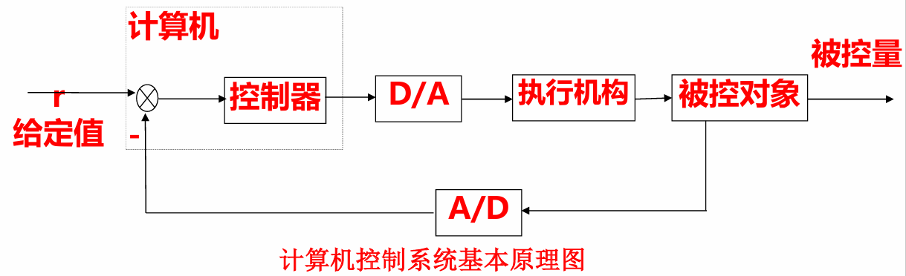

软硬件结合
MCU主系统与外部设备
片外接口
- 从硬件上讲：外部设备连接到主系统的口（引脚），所以电信号必须为“数字”信号即TTL电平
- 从软件方面讲：放在存储空间里，所以外部设备是CPU能访问的“存储器”
总线
总线就是数据传输的公共通道
- 数据总线——传送内容
- 地址总线——传送地点
- 控制总线——如何传送
对应MCS-51的总线
- 数据总线——P0
- 地址总线——P2,P0
- 控制总线——WR,RD,PSEN,ALE
其中P0口分时复用为数据或者地址总线
键盘
[!note]
- 按下按键：Vp=0V => 逻辑“0”
- 释放按键：Vp=5V => 逻辑“1”
由此，就将按动“按键开关”的 机械动作转换为数字信号
电路图
去抖
抖动时间：1ms ~ 20 ms
软件去抖
MOV DPTR, #0100H MOVX A, @DPTR ANL A, #01H ;按位与 MOV B, A LCALL DT ;延时20ms MOVX A, @DPTR ANL A, #01H CJNE A, B, LOOP0 ;不相等，则跳转 RET LOOP0: CLR A RET
多个按键
当存在多个按键时，给键盘上的每一个按键分配一个数字，代 表这个按键，这个数字就称为键值
矩阵键盘

键盘扫描程序
#include <reg51.h> // 包含 51 单片机寄存器定义
//定义端口
sbit key_r1 = P1^0;
sbit key_r2 = P1^1;
sbit key_r3 = P1^2;
sbit key_l1 = P1^4;
sbit key_l2 = P1^5;
sbit key_l3 = P1^6;
unsigned char key_scan(void)
{
unsigned char temp;
unsigned char col;
temp = 0xFF; // 初始化返回值为 0xFF，表示无按键按下
for (col = 0; col < 3; col++) // 遍历三列
{
P1 = 0xFF; // 将 P1 口全部置为高电平
if (col == 0) key_l1 = 0; // 第一列接地
else if (col == 1) key_l2 = 0; // 第二列接地
else if (col == 2) key_l3 = 0; // 第三列接地
if (!key_r1) // 检测第一行
{
if (!key_r1) // 再次检测，消抖
{
temp = col * 3 + 1; // 计算按键值
break; // 退出循环
}
}
if (!key_r2) // 检测第二行
{
if (!key_r2) // 再次检测，消抖
{
temp = col * 3 + 2; // 计算按键值
break; // 退出循环
}
}
if (!key_r3) // 检测第三行
{
if (!key_r3) // 再次检测，消抖
{
temp = col * 3 + 3; // 计算按键值
break; // 退出循环
}
}
}
return temp; // 返回按键值
}
- 加上去抖和拍发
//**********************************************
// 键盘驱动程序
// 返回按键键值。当无键按下时返回值为0。
//**********************************************
unsigned char key(void)
{
extern unsigned char key_scan(void); // 声明外部的按键扫描函数
#define firsttime 200 // 首次检测到按键时的延时计数
#define countime 30 // 按键持续有效时的延时计数
static unsigned char newk = 0, last = 0, dt = 0; // 静态变量
unsigned char temp = 0; // 临时变量
temp = key_scan(); // 调用按键扫描函数，获取当前按键值
if (temp == newk) // 如果当前按键值与上一次扫描的按键值相同
{
if (newk != last) // 如果当前按键值与上一次有效的按键值不同
{
dt = firsttime; // 开始首次消抖计时
}
else // 如果当前按键值与上一次有效的按键值相同
{
if (--dt == 0) // 如果计时结束
{
dt = countime; // 重新开始计时
}
else
{
temp = 0; // 如果计时未结束，忽略当前扫描结果
}
}
}
else // 如果当前按键值与上一次扫描的按键值不同
{
newk = temp; // 更新上一次扫描的按键值
temp = 0; // 清空临时变量
}
if (dt == 0) // 如果计时结束，说明按键有效
{
last = newk; // 更新上一次有效的按键值
}
return temp; // 返回当前按键值，如果没有按键按下，返回 0
}
数码管显示
- 数码管是数字形式的显示屏，通过对其不同的管脚输入相对的电流，会使其发亮
- 七段式和八段式LED数码管 ，八段比七段多了一个小数点
数码管又分为共阴极和共阳极两种类
- 共阴极就是将八个LED的阴极连在一起，让其接地，这样给任何一个LED高电平，它便能点亮
- 共阳极就是将八个 LED的阳极连在一起，低电平亮
数码管的显示方式：静态法和动态法
静态显示
- 静态显示方式
- 所有LED的位选均共同连接到+VCC或GND，每个 LED的8根段选线分别连接一个8位并行I/O口，从该 I/O口送出相应的字型码显示字型
- 原理简单；显示亮度强，无闪烁；占用I/O资源较多
共阳极数码管显示数字的段码表
- 静态显示是指显示驱动电路具有输出锁存功能，待显示的字符编码被CPU送出后， 数码管会一直显示该字符不变
动态显示
- 所有LED的段选线共同连接在一起共用一个 8位I/O口，而每个LED的位选分别由一根相应的I/O口线控制
- 动态扫描显示方式，每一个时刻只选通其中一个LED
- 轮流向各位数码管送出字形码和相应的位选，使人的感觉各位数码管同时都在显示
- 各个位的延时时间长短是非常重要
[!note]
- 采用查表在程序设计中可以设计一个变量，每隔一定时间在“0～9”之间变化，然后按照这个数据去查找段码表，把查到的数据送到 P4口
LED点阵显示
8X8 LED点阵是最基本的 点阵显示模块
- 8X8点阵共需要64个发光二极管组成，且每个发光二极管是放置在行线和列线的交叉点上
- 当对应的某一列置1电平，某一行置0电平，则相应的二极管就亮
记录字模的列代码，例如
形成的列代码为 00H，00H，3EH，41H，41H，3EH ，00H，00H；只要把这些代码分别送到相应的列线上面，即可 实现“0”的数字显示
LED点阵的动态显示控制原理
- 如果要实现左移或 者其它的显示效果则将显示缓存中的每个位进行移位或者其它处理,然后再调用扫描显示 函数就可以实现所规定的效果
- 显示使能端是比较重要的，主要是因为送完一行后需要一个消隐的动作，如果不做该动作，则在显示的过程中会有拖影的现象
液晶显示
- 液晶显示模块是以LCD液晶屏为核心，配 合一定的控制电路，以达到方便使用显示 组件的目的
- 原理和LED点阵显示字是一个道理，只不过每一行都有对应的位存储对应的值，每个位都是真正的同时显示，而不像LED点阵需要通过不断刷新使得人眼下近似成为同时显示。
输入输出接口与过程通道
计算机控制系统组成
- 硬件+软件

计算机控制系统的硬件组成
- 计算机系统硬件+生产过程各部分的装置
- 计算机系统硬件
- 主机：计算机控制系统的核心。主机通过接口向系统的各个部分发出各种命令，对被控对象进行检测和控制
- 输入输出通道：计算机和生产对象之间进行信息交换的通道
- 过程输入通道：被控参数转换成数字信号
- 过程输出通道：控制命令和数据，转换成可以对生产对象进行控制的信号
- 其中过程输入输出通道包括模拟量输入输出通道和数字量输入输出通道
- 外部设备：外设
- 生产过程装置
- 测量变送单元：测量各种参数而采用的相应的检测元件及变送器
- 执行机构：根据计算机输出的控制信号，产生相应的控制动作，使被控对象按要求运行
计算机控制系统的软件组成
- 系统软件+应用软件+数据库
- 系统软件：来使用和管理计算机的程序
- 应用软件：由用户根据要解决的实际问题 而编写的各种程序
- 数据库：资料管理、 存档和检索
计算机控制系统的特点
- 计算机控制系统中信号的具体变换与传输

接口
- 接口是计算机与外部设备（部件与部件之间）交换信息的桥梁，它包括输入接口和输出接口
- 则接口技术则是计算机与外部设备之间如何交换信息的技术。
过程通道
过程通道是在计算机和生产过程之间设置的信息传送和转换的连接通道，包括模拟量输入通道、模拟量输出通道、数字量(开关量)输入通道、数字量(开关量)输出通道。

- 模拟量输入通道：生产过程的参数(如温度、压力、流量、速度、位 移、电流、电压等)一般是随时间连续变化的模拟量，通过检测元件或变送器将其转换为对应的模拟电压或电流，并转化为数字信号的过程
- 模拟量输出通道： 把微机输出的数字控制信号转换为模拟信号（电压 或电流）并传输给被控对象的过程
- 数字量(开关量)输入通道： 拾起或检测反映生产过程或设备工况的开关信号 （如继电器接点、行程开关、按纽等）、脉冲信号 （如速度、位移、流量脉冲等）并传输给微机的过程
- 数字量(开关量)输出通道： 将数字信号从微机传输给那些接受数字信号的执行机构和显示、指示装置的过程
过程输入输出通道与CPU交换的信息类型
- 数据：反映生产现场的参数及状态的信息，它包括数字量、开关量和模拟量
- 状态：协议信息，如应答信息、握手信息，反映过程通道的状态，如准备就绪信号
- 控制：控制过程通道的启动和停止等信息
模拟量输入通道
- 把从系统中检测到的模拟信号， 变成二进制数字信号，经接口送往计算机
- 传感器：将生产过程工艺参数转换为电参数的装置
- 变送器：将温度、压力、流量的电信号变成0～10mA或 4～20mA的统一信号
模拟量输入通道的组成
模拟量输入通道一般由I/V变换，多路转换器、采样保持器、A/D转换器、接口及控制逻辑等组成。
I/V变换
变送器输出的信号为0～10mA或4～20mA的统一 信号，需要经过I/V变换变成电压信号后才能处理
- 无源I/V变换：电压采样电阻
- 有源I/V变换：与无源变换的区别在于信号的隔离上
多路转换器
- 多路转换器又称多路开关，多路开关是用来切换模拟 电压信号的关键元件
- 利用多路开关可将各个输入信号依次地或随机地连接到公用放大器或A/D转换器上
采样、量化及采样保持器
信号的采样
- 采样过程：按一定的时间间隔T，把模拟信号，转变成脉冲输出信号的过程

- T为采样宽度，即K闭合的时间
- 采样信号
y*(t)： 幅值连续但是时间上离散的模拟信号。
[!note]
香农采样定理： 如果模拟信号 ( 包括噪声干扰在内）频谱的最高频率为 fmax ，只要按照采样频率
f ≥ 2fmax采样 ， 采样信号y*(t) 就能唯一地复现 y(t) 。
量化
- 量化，采用一组数码(如二进制码)来逼近离散模拟信号的幅值，将其转换为数字信号
- 量化过程：将采样信号转换为数字信号的过程称为量化过程
- 量化装置：执行量化动作的装置是A/D转换器。
- 量化单位：字长为n的A/D转换器把
ymin~ymax范围内变化的采样信号变换为数字0~2^(n-1)，其最低有效位(LSB)所对应的模拟量q 称为量化单位。 - 量化误差：
(±1/2)q
[!note]
- 将模拟信号电平分成N=2^n等分
- 每一等分用一个n位定点数表示
- 例如：被采样的电压值范围-5V ~ +5V ，用8位二进制数表示
- 则将
-5V ~ +5V的电压等分为2^8个等级，即：00000000 – 11111111，10/256 = 0.039V为一个等级
采样保持器（S/H）
- 工作方式： 采样和保持
- 采样：采/保电路的输出跟踪（track）模拟输 入电压
- 保持：采/保电路将保持采样命令撤销时刻的采样值，直到保持命令撤销并且再次接收到采样命令为止
- 孔径时间(aperture time) 和孔径误差 (aperture error)
- 在采/保电路中，完成一次A/D转换所需的时间称为孔径时间。
- 采样时刻的最大转换误差称为 孔径误差
- 孔径误差的消除——采用 采样保持器
模拟量输出通道
模拟量输出通道的结构形式
- 模拟量输出通道一般由接口电路、D/A转换器、多路转换开关，采样保持器、V/I变换等组成
- 一个通路设置一个D/A转换器的形式——数字保持
- 多个通路共用一个数/模转换器的形式——模拟保持
D/A转换器
通常采用D/A转换器外加运算放大器的方法， 把D/A转换器的电流输出转换为电压输出
分别有单极性与双极性电压输出电路
- VOUT1为单极性输出，VOUT1和 D 成正比关系
- VOUT2为双极性输出，当输入数字量D小于 80 H即128时，输出模拟电压为负，大于则为正
V/I 变换和自动/手动切换
集成V/I转换器ZF2B20
- 通过V/I变换的方式产生一个与输入电压成比例的输出电流
- 输入电压范围是0～10V，输出电流是 4～20mA，单正电源供电，电源电压范围 为10～32V
- 特点是低漂移（Low excursion）
集成V/I转换器AD694
- 输出范围：4～20mA,0～20mA。 输入范围：0～2V或0～10V。
- 与电流输出型D/A转换器直接配合使用，实现程控电流输出
- 开路或超限报警
带有自动/手动切换的V/I变换
- 在计算机出现故障时，可以手动操作
- 实现 V/I 变换：(Vi=0~5V➔IL=0~10mA)
- 能够实现 A/H 切换
数字量输入输出通道
- 数字量(开关量)信号；以二进制的逻辑 “1”和“0”出现的
数字量输入输出接口技术
数字量输入接口
- 对生产过程进行控制，收集生产过程的状态信息，根据状态信息，再给出控制量
- 用三态门缓冲器74LS244取得状态信息。
#设片选端口地址为 port
MOV DX, port;
IN AL , DX;
数字量输出接口
- 当对生产过程进行控制时，一般控制状态需进行保持，直到下次给出新的值为止，这时输出就要锁存
- 用 74LS273 作 8 位输出锁存口，对状态输出信号进行锁存。
MOV AL, DATA
MOV DX, port
OUT DX, AL
数字量输入通道
- 数字量输入通道主要由 输入缓冲器、输入调理电路、输入地址译码电路等组成

输入调理电路
数字量(开关量)输入通道的基本功能就是接收外部 装置或生产过程的状态信号
将现场 输入的状态信号经转换、保护、滤波、隔离等措施转换 成计算机能够接收的逻辑信号，这些功能称为信号调理
小功率输入调理电路
开关、继电器等接点接通和断开动作，被转换成 TTL 电平 信号与计算机相连
加入有较长时间常数的 积分电路 来消除这种振荡
大功率输入调理电路
高压与低压之间 ， 用 光电耦合器 进行隔离
数字量输出通道
- 数字量输出通道主要由输出锁存器、输出驱动电路、输 出口地址译码电路等组成

输出驱动电路
- 在数字量输出通道中，关键是驱动，因为从锁存器中出来的是TTL 电平，驱动能力有限，所以要加上驱动电路
- 小功率直流驱动电路：功率晶体管输出驱动继电器电路
- 大功率交流驱动电路中，固态继电器 SSR作交流开关使用